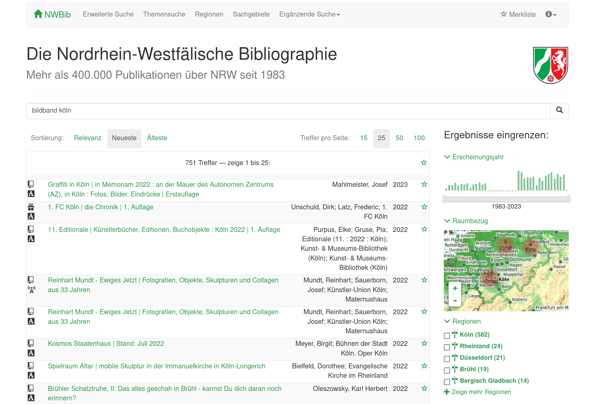

lobid, nwbib & rpb
Fabian Steeg, Adrian Pohl
Metadateninfrastruktur

Lightning Talk im DWI-Bereichstreffen, WWW, 2023-04-18
Diese Präsentation:
https://slides.lobid.org/2023-lobid-nwbib-rpb/


lobid steht für Linking Open Bibliographic Data
Seit über zehn Jahren die zentrale Komponente der offenen Infrastruktur im hbz
Stellt web-basierte Rechercheoberflächen und Schnittstellen bereit
lobid-Dienste
lobid-resources: Daten des hbz-Verbundkatalogs
lobid-organisations: Daten des deutschsprachigen Sigelverzeichnisses und DBS-Stammdaten
lobid-gnd: Gemeinsame Normdatei
lobid-resources

Dokumentation der lobid-resources-API:
https://lobid.org/resources/api
lobid-organisations

Dokumentation der lobid-organisations-API:
https://lobid.org/organisations/api
lobid-gnd

Dokumentation der lobid-gnd-API:
https://lobid.org/gnd/api
Abfragemöglichkeiten am Beispiel lobid-gnd
JSON-LD-Daten in Elasticsearch-Index
Elasticsearch- / Lucene-Suchsyntax
lobid – ein zentraler Knoten bibliothekarischer Dateninfrastruktur

NWBib
Webanwendung, die nahezu vollständig auf lobid-Daten basiert
Nutzt das NWBib-Subset in den lobid-Verbunddaten
Informationen zu besitzenden Bibliotheken aus lobid-Organisationsdaten
Themenvorschläge auf Basis von lobid-gnd
NWBib-Suchergebnisliste
Anfrage gegen das NWBib-Subset in lobid-Verbunddaten
Informationen zu besitzenden Bibliotheken (Name, URL, Standort) werden aus lobid geladen
Virtuelle Deutsche Landesbibliographie (VDL)
nwbib.de ist in die VDL integriert
Rheinland-Pfälzische Bibliographie (RPB)
Auftrag des LBZ: Softwaremigration für die RPB
Rückgriff auf jahrelange Erfahrungen mit der NWBib
Nutzt Metafacture zur Datentransformation

Prototyp verfügbar unter http://rpb.lobid.org
Weiterführende Informationen –
Rund um lobid und Linked Data
- lobid-Blog, Präsentationsfolien, lobid auf Twitter und Mastodon
- Kreutzer, Till (2011): Open Data – Freigabe von Daten aus Bibliothekskatalogen. Hg. v. Hochschulbibliothekszentrum des Landes Nordrhein-Westfalen (PDF)
- Pohl, Adrian / Steeg, Fabian / Christoph, Pascal (2018): lobid – Dateninfrastruktur für Bibliotheken. In: Informationspraxis 4(1). https://doi.org/10.11588/ip.2018.1.52445
- Steeg, Fabian / Pohl, Adrian / Christoph, Pascal (2019): lobid-gnd – Eine Schnittstelle zur Gemeinsamen Normdatei für Mensch und Maschine. In: Informationspraxis 5(1). https://doi.org/10.11588/ip.2019.1.52673
- Steeg, Fabian / Pohl, Adrian (2021): Ein Protokoll für den Datenabgleich im Web am Beispiel von OpenRefine und der Gemeinsamen Normdatei (GND). In: Qualität in der Inhaltserschließung. https://doi.org/10.1515/9783110691597-013
Weiterführende Informationen – Nutzung von lobid-gnd
- Stefan Dumont: correspSearch: Neue Tools, neue Daten – und eine Auszeichnung https://dhd-blog.org/?p=10632
- Harald Lordick: Die Öffnung der GND und die historische Forschung: https://djgd.hypotheses.org/1511
- Harald Lordick & Beata Mache: Annotationen anhand der Gemeinsamen Normdatei aus einer anwendungsorientierten Perspektive historischer Forschung https://zenodo.org/record/1188230
- Christian Thomas: Humboldts ›Bekenntnisse‹ von 1801 nach der Original-Handschrift aus den Amerikanischen Reisetagebüchern im Deutschen Textarchiv der BBAW http://www.avhumboldt.de/?p=14447
- Christian Erlinger-Schiedlbauer et al.: Semantische Suchabfragen mit der Linked Open Data Cloud generieren https://www.societybyte.swiss/2018/10/24/semantische-suchabfragen-mit-der-linked-open-data-cloud-generieren/